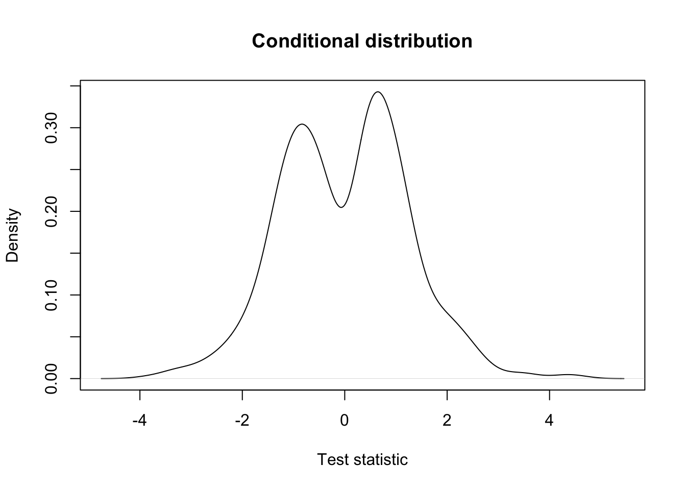
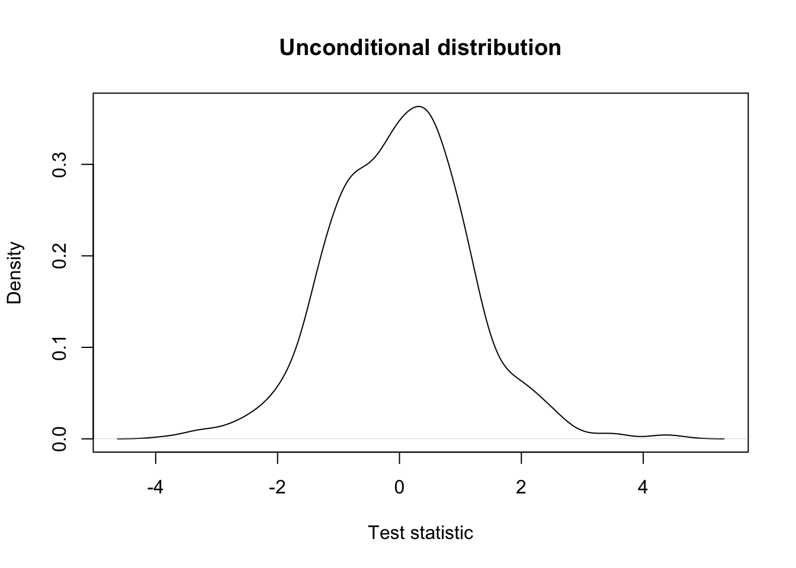
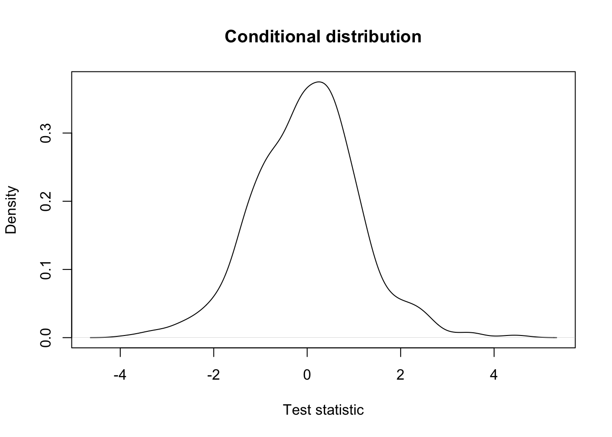
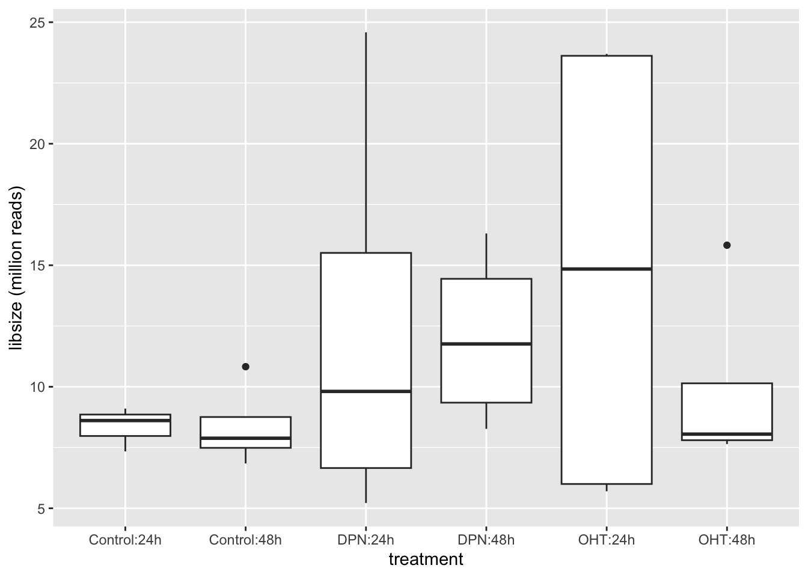
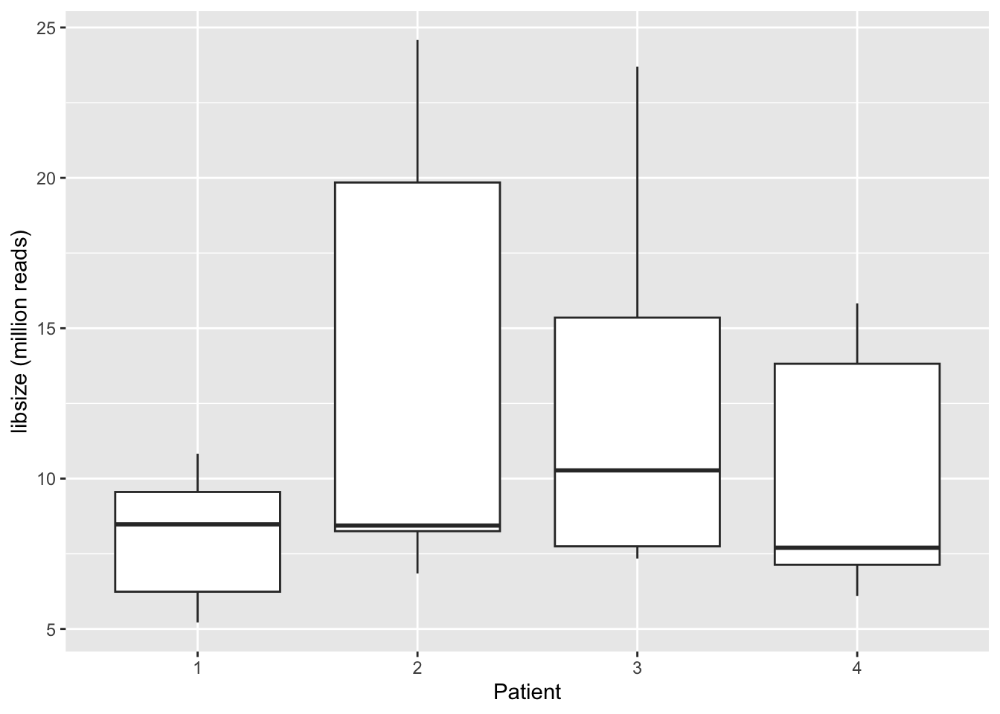
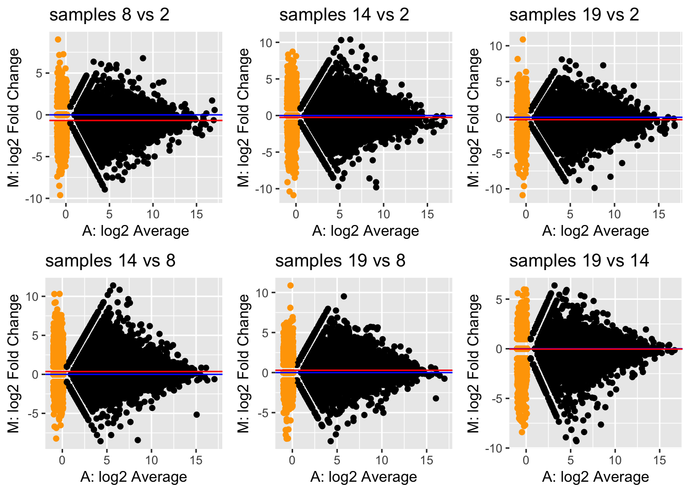
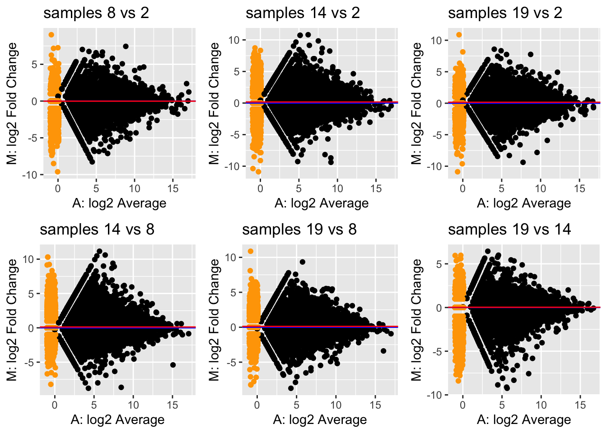
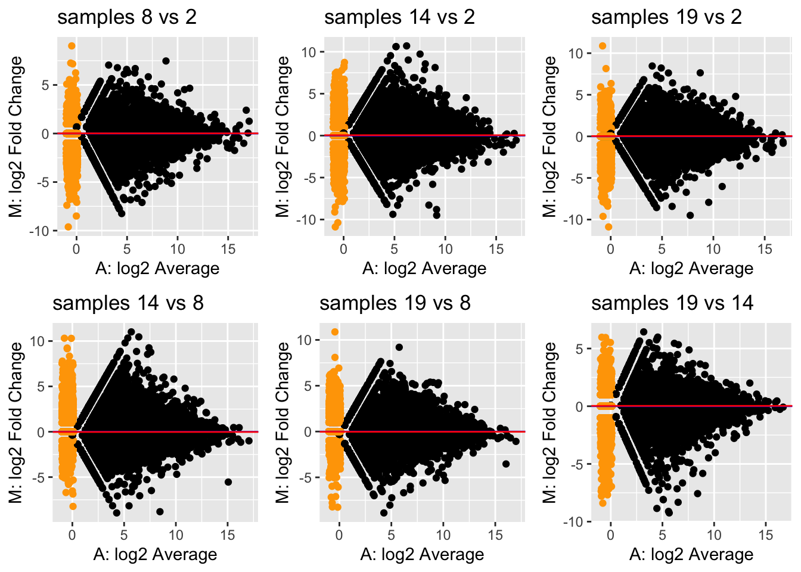

Independent
Filtering
Independent filtering is a strategy to remove features (in this case,
genes) prior to the analysis. Removal of these features may lower the
multiple testing correction for other genes that pass the filter. We try
to remove genes that have a low power to be found statistically
significant, and/or that are biologically less relevant. A common
filtering strategy is to remove genes with a generally low expression,
as low counts have lower relative uncertainty (hence lower statistical
power), and may be considered biologically less relevant.
Implementation in edgeR.
| filterByExpr | R Documentation |
Filter Genes By Expression Level
Description
Determine which genes have sufficiently large counts to be retained in a statistical analysis.
Usage
## S3 method for class 'DGEList'
filterByExpr(y, design = NULL, group = NULL, lib.size = NULL, ...)
## S3 method for class 'SummarizedExperiment'
filterByExpr(y, design = NULL, group = NULL, lib.size = NULL, ...)
## Default S3 method:
filterByExpr(y, design = NULL, group = NULL, lib.size = NULL,
min.count = 10, min.total.count = 15, large.n = 10, min.prop = 0.7, ...)
Arguments
y |
matrix of counts, or a DGEList object, or a SummarizedExperiment object.
|
design |
design matrix. Ignored if group is not NULL.
|
group |
vector or factor giving group membership for a oneway layout, if appropriate.
|
lib.size |
library size, defaults to colSums(y).
|
min.count |
numeric. Minimum count required for at least some samples.
|
min.total.count |
numeric. Minimum total count required.
|
large.n |
integer. Number of samples per group that is considered to be “large”.
|
min.prop |
numeric. In large sample situations, the minimum proportion of samples in a group that a gene needs to be expressed in. See Details below for the exact formula.
|
... |
any other arguments.
For the DGEList and SummarizedExperiment methods, other arguments will be passed to the default method.
For the default method, other arguments are not currently used.
|
Details
This function implements the filtering strategy that was described informally by Chen et al (2016).
Roughly speaking, the strategy keeps genes that have at least min.count reads in a worthwhile number samples.
More precisely, the filtering keeps genes that have CPM >= CPM.cutoff in MinSampleSize samples,
where CPM.cutoff = min.count/median(lib.size)*1e6 and MinSampleSize is the smallest group sample size or, more generally, the minimum inverse leverage computed from the design matrix.
If all the group samples sizes are large, then the above filtering rule is relaxed slightly.
If MinSampleSize > large.n, then genes are kept if CPM >= CPM.cutoff in k samples where
k = large.n + (MinSampleSize - large.n) * min.prop.
This rule requires that genes are expressed in at least min.prop * MinSampleSize samples, even when MinSampleSize is large.
In addition, each kept gene is required to have at least min.total.count reads across all the samples.
Value
Logical vector of length nrow(y) indicating which rows of y to keep in the analysis.
Author(s)
Gordon Smyth
References
Chen Y, Lun ATL, and Smyth, GK (2016).
From reads to genes to pathways: differential expression analysis of RNA-Seq experiments using Rsubread and the edgeR quasi-likelihood pipeline.
F1000Research 5, 1438.
https://f1000research.com/articles/5-1438
Examples
## Not run:
keep <- filterByExpr(y, design)
y <- y[keep,]
## End(Not run)
suppressPackageStartupMessages({
library(limma)
library(edgeR)
library(DESeq2)
})
dds <- makeExampleDESeqDataSet()
simCounts <-counts(dds)
group <- dds$condition
dge <- edgeR::DGEList(simCounts)
design <- model.matrix(~group)
keep <- filterByExpr(dge, design)
table(keep)
lib.size <- dge$samples$lib.size * dge$samples$norm.factors
cpmMinCount <- 10/median(lib.size)*1e6
summary(group)
## A B
## 6 6
minSampSize <- min(summary(group))
minSampSize
## [1] 6
keep <- rowSums(cpm(dge) > cpmMinCount) >= minSampSize
table(keep)
leverage <- design%*% solve(t(design)%*%design)%*%t(design) %>%diag()
1/leverage
## 1 2 3 4 5 6 7 8 9 10 11 12
## 6 6 6 6 6 6 6 6 6 6 6 6
## [1] 6
Independent filtering has been formalized by Bourgon et al.
(2010).
The concept of independent filtering can be summarized as
follows:
- For each feature we calculate two statistics, \(S_F\) and \(S_T\), respectively used for two stages:
filtering and testing (e.g., differential expression).
- In order for a feature to be deemed significant, both of its
statistics must be greater than some cut-off.
- We want to control the type I error rate of the second stage
(testing). But note that the second stage is conditional on the
first stage, as we only test features passing the filter, and
basically ignore the fact that filtering was performed. Indeed, one
criticism is that computing and correcting the \(p\)-values as if filtering had not been
performed may lead to overoptimistic adjusted \(p\)-values.
- Bourgon et
al. (2010) show that filtering is only appropriate (i.e., does
not inflate type I error rate) if the conditional null distribution of
test statistics for features passing the filter is the same as the
unconditional null distribution. Therefore, filtering is
appropriate if the statistic used for filtering is independent of the
statistic used for testing under the null hypothesis.
Let’s try a couple of examples to get some intuition using simulated
data.
suppressPackageStartupMessages(library(DESeq2))
set.seed(24)
dds <- DESeq2::makeExampleDESeqDataSet()
simCounts <- counts(dds)
group <- dds$condition
A Dependent Test
Statistic
filterStatEffectSize <- abs(rowMeans(simCounts[,group == "A"]) - rowMeans(simCounts[,group == "B"]))
testStat <- genefilter::rowttests(simCounts, group)
## Warning: replacing previous import 'BiocGenerics::setequal' by
## 'S4Vectors::setequal' when loading 'AnnotationDbi'
## Warning: replacing previous import 'BiocGenerics::setequal' by
## 'S4Vectors::setequal' when loading 'Biostrings'
## Warning: multiple methods tables found for 'union'
## Warning: multiple methods tables found for 'intersect'
## Warning: multiple methods tables found for 'setdiff'
## Warning: multiple methods tables found for 'setequal'
## unconditional distribution
plot(density(testStat$statistic, na.rm=TRUE),
xlab = "Test statistic",
main = "Unconditional distribution")

## conditional distribution: very different!
mean(filterStatEffectSize > 1)
## [1] 0.792
hist(filterStatEffectSize, breaks=40)
abline(v=1, col="red")

keepEffectSize <- filterStatEffectSize > 1
plot(density(testStat$statistic[keepEffectSize], na.rm=TRUE),
xlab = "Test statistic",
main = "Conditional distribution")

An Independent Test
Statistic
filterStatGlobalMean <- rowMeans(simCounts)
mean(filterStatGlobalMean > 5) # we remove a similar fraction
## [1] 0.771
keepGlobalMean <- filterStatGlobalMean > 5
## unconditional distribution
plot(density(testStat$statistic, na.rm=TRUE),
xlab = "Test statistic",
main = "Unconditional distribution")

## conditional distribution: the same.
plot(density(testStat$statistic[keepGlobalMean], na.rm=TRUE),
xlab = "Test statistic",
main = "Conditional distribution")

Normalization
Normalization is necessary to correct for several sources of
technical variation:
- Differences in sequencing depth between samples.
Some samples get sequenced deeper in the sense that they consist of more
(mapped) reads and therefore can be considered to contain a higher
amount of information, which we should be taking into account. In
addition, if a sample is sequenced deeper, it is natural that the counts
for each gene will be higher, jeopardizing a direct comparison of the
expression counts.
- Differences in RNA population composition between
samples. As an extreme example, suppose that two samples have been
sequenced to the exact same depth. One sample is contaminated and has a
very high concentration of the contaminant cDNA being sequenced, but
otherwise the two samples are identical. Since the contaminant will be
taking up a significant proportion of the reads being sequenced, the
counts will not be directly comparable between the samples. Hence, we
may also want to correct for differences in the composition of the RNA
population of the samples.
- Other technical variation such as sample-specific
GC-content or transcript length effects may also be accounted for.
data("parathyroidGenesSE", package="parathyroidSE")
se1 <- parathyroidGenesSE
rm(parathyroidGenesSE)
colData(se1) %>%
as.data.frame() %>%
filter(duplicated(experiment))
| SRR479061 |
SRX140511 |
2 |
DPN |
24h |
SRA051611 |
SRP012167 |
SRS308873 |
| SRR479064 |
SRX140513 |
2 |
OHT |
24h |
SRA051611 |
SRP012167 |
SRS308875 |
| SRR479075 |
SRX140523 |
4 |
DPN |
48h |
SRA051611 |
SRP012167 |
SRS308885 |
| SRR479078 |
SRX140525 |
4 |
OHT |
48h |
SRA051611 |
SRP012167 |
SRS308887 |
There are technical repeats in the data.
We mentioned previous lectures that we can sum over technical
repeats, because techical repeats are Poisson and the sum of two Poisson
variables is again Poisson.
dupExps <- colData(se1) %>%
as.data.frame() %>%
filter(duplicated(experiment)) %>%
pull(experiment)
counts <- assays(se1)$counts
newCounts <- counts
cd <- colData(se1)
for(ss in 1:length(dupExps)){
# check which samples are duplicates
relevantId <- which(colData(se1)$experiment == dupExps[ss])
# sum counts
newCounts[,relevantId[1]] <- rowSums(counts[,relevantId])
# keep which columns / rows to remove.
if(ss == 1){
toRemove <- relevantId[2]
} else {
toRemove <- c(toRemove, relevantId[2])
}
}
# remove after summing counts (otherwise IDs get mixed up)
newCounts <- newCounts[,-toRemove]
newCD <- cd[-toRemove,]
# Create new SummarizedExperiment
se <- SummarizedExperiment(assays = list("counts" = newCounts),
colData = newCD,
metadata = metadata(se1))
treatment <- colData(se)$treatment
table(treatment)
qplot(colSums(assays(se)$counts)/1e6, geom="histogram", bins=10,col="black") +
theme(legend.position = "none") +
xlab("libsize (million reads)")

qplot(
colData(se)$treatment:colData(se)$time,
colSums(assays(se)$counts)/1e6,geom="boxplot"
) +
xlab("treatment")+
ylab("libsize (million reads)")

qplot(
colData(se)$patient,
colSums(assays(se)$counts)/1e6,geom="boxplot"
) +
xlab("Patient")+
ylab("libsize (million reads)")

ma2Samp <- function(countMx,libSize=NULL) {
stopifnot("`countMx` is not a matrix with two columns" = ncol(countMx) == 2)
A <- countMx %>% log2 %>% rowMeans
if(is.null(libSize))
M <- countMx %>% log2 %>% apply(.,1,diff)
else
M <- countMx %>% log2 %>% apply(.,1,diff) - libSize %>% log2 %>% diff
w <- countMx[,1]==min(countMx[,1]) | countMx[,2]==min(countMx[,2])
if (any(w)) {
A[w] <- runif(sum(w), min = -1, max = .1)
M[w] <- log2(countMx[w,2] + 1) - log2(countMx[w,1] + 1)
}
MAplot <- qplot(A, M, col=w) +
theme(legend.position = "none") +
scale_color_manual(values = c("black","orange")) +
xlab("A: log2 Average") +
ylab("M: log2 Fold Change")
MAplot +
geom_abline(intercept=0,slope=0,col="blue") +
geom_abline(intercept=median(M[!w],na.rm=TRUE),slope=0,col="red")
}
Let’s take a look at how comparable different replicates are in the
Control condition at 48h in our dataset. We will investigate this using
MD-plots (mean-difference plots as introduced by Dudoit et al. (2002)),
also sometimes referred to as MA-plots.
ids <- which(colData(se)$treatment =="Control" & colData(se)$time == "48h")
ids
## [1] 2 8 14 19
colSums(assays(se)$counts[,ids]) / 1e6
## [1] 10.827109 6.844144 8.064268 7.701432
pairComb <- combn(
ids,
m=2)
plots <- apply(pairComb,2,function(x) ma2Samp(assay(se)[,x]) + ggtitle(paste("samples",x[2],"vs", x[1])))
do.call("grid.arrange",c(plots,ncol=3))

We see clear bias for some pairwise comparisons. For example, in the
first plot comparing sample 8 versus sample 2, the log fold-changes are
biased downwards. This means that, on average, a gene is lower expressed
in sample 8 versus sample 2. Looking at the library sizes, we can indeed
see that the library size for sample 2 is about \(11×10^6\) while it is only about \(7×10^6\) for sample 8! This is a clear
library size effect that we should take into account.
We can solve these issues by introducing offsets in our model.
\[
\left\{
\begin{array}{ccc}
Y_{gi} & \sim & Poi(\mu_{gi}) \\
\log \mu_{gi} & = & \eta_{gi} \\
\eta_{gi} & = & \mathbf{X}^T_i \beta_g + log(O_{gi}) \\
\end{array}
\right.
\]
libSize <- colSums(assay(se))
plots2 <- apply(pairComb,2,function(x) ma2Samp(assay(se)[,x],libSize = libSize[x]) + ggtitle(paste("samples",x[2],"vs", x[1])))
do.call("grid.arrange",c(plots2,ncol=3))

TMM method (default
of edgeR)
Robinson
and Oshlack (2010). Genome Biology
knitr::include_graphics("./figs/edgeRNormIntro.png")

- On the plot we see a clear effect on all genes
- Correcting for library size tends to over correct.
- Some DE genes are highly abundant and determine the library size to
a large extend
The trimmed mean of M-values (TMM) method introduced by Robinson
& Oshlack (2010) is a normalization procedure that calculates a
single normalization factor for each sample. As the name suggests, it is
based on a trimmed mean of fold-changes (\(M\)-values) as the scaling factor. A
trimmed mean is an average after removing a set of ``extreme’’ values.
Specifically, TMM calculates a normalization factor \(F_i^{(r)}\) across genes \(g\) for each sample \(i\) as compared to a reference sample \(r\), \[
\log_2(F_i^{(r)}) = \frac{\sum_{g \in {\cal G}^*} w_{gi}^r
M_{gi}^r}{\sum_{g \in {\cal G}^*} w_{gi}^r},
\] where \(M_{gi}^r\) represents
the \(\log_2\)-fold-change of the gene
expression fraction as compared to a reference sample \(r\), i.e., \[
M_{gi}^r = \log_2\left( \frac{Y_{gi} / N_i}{ Y_{gr} / N_r} \right),
\] and \(w_{gi}^r\) represents a
precision weight calculated as \[
w_{gi}^r = \frac{N_i - Y_{gi}}{N_i Y_{gi}} + \frac{N_r - Y_{gr}}{N_r
Y_{gr}},
\] and \({\cal G}^*\) represents
the set of genes after trimming those with the most extreme average
expression. The weights serve to account for the fact that fold-changes
for genes with lower read counts are more variable.
The procedure only takes genes into account where both \(Y_{gi}>0\) and \(Y_{gr}>0\). By default, TMM trims genes
with the \(30\%\) most extreme \(M\)-values and \(5\%\) most extreme average gene expression,
and chooses as reference \(r\) the
sample whose upper-quartile is closest to the across-sample average
upper-quartile.
TMM normalization may be performed from the
calcNormFactors function implemented in
edgeR:
dge <- edgeR::calcNormFactors(se)
dge$samples #normalization factors added to colData
| Sample1 |
1 |
9102683 |
0.9782830 |
SRR479052 |
SRX140503 |
1 |
Control |
24h |
SRA051611 |
SRP012167 |
SRS308865 |
| Sample2 |
1 |
10827109 |
0.9728700 |
SRR479053 |
SRX140504 |
1 |
Control |
48h |
SRA051611 |
SRP012167 |
SRS308866 |
| Sample3 |
1 |
5217761 |
0.9898593 |
SRR479054 |
SRX140505 |
1 |
DPN |
24h |
SRA051611 |
SRP012167 |
SRS308867 |
| Sample4 |
1 |
9706035 |
0.9930169 |
SRR479055 |
SRX140506 |
1 |
DPN |
48h |
SRA051611 |
SRP012167 |
SRS308868 |
| Sample5 |
1 |
5700022 |
0.9850867 |
SRR479056 |
SRX140507 |
1 |
OHT |
24h |
SRA051611 |
SRP012167 |
SRS308869 |
| Sample6 |
1 |
7854568 |
0.9897270 |
SRR479057 |
SRX140508 |
1 |
OHT |
48h |
SRA051611 |
SRP012167 |
SRS308870 |
| Sample7 |
1 |
8610014 |
0.9266581 |
SRR479058 |
SRX140509 |
2 |
Control |
24h |
SRA051611 |
SRP012167 |
SRS308871 |
| Sample8 |
1 |
6844144 |
0.9544240 |
SRR479059 |
SRX140510 |
2 |
Control |
48h |
SRA051611 |
SRP012167 |
SRS308872 |
| Sample9 |
1 |
24584280 |
0.9188545 |
SRR479060 |
SRX140511 |
2 |
DPN |
24h |
SRA051611 |
SRP012167 |
SRS308873 |
| Sample10 |
1 |
8267977 |
0.9398000 |
SRR479062 |
SRX140512 |
2 |
DPN |
48h |
SRA051611 |
SRP012167 |
SRS308874 |
| Sample11 |
1 |
23590411 |
0.9096695 |
SRR479063 |
SRX140513 |
2 |
OHT |
24h |
SRA051611 |
SRP012167 |
SRS308875 |
| Sample12 |
1 |
8247122 |
0.9369050 |
SRR479065 |
SRX140514 |
2 |
OHT |
48h |
SRA051611 |
SRP012167 |
SRS308876 |
| Sample13 |
1 |
7341000 |
1.0668032 |
SRR479066 |
SRX140515 |
3 |
Control |
24h |
SRA051611 |
SRP012167 |
SRS308877 |
| Sample14 |
1 |
8064268 |
1.0552688 |
SRR479067 |
SRX140516 |
3 |
Control |
48h |
SRA051611 |
SRP012167 |
SRS308878 |
| Sample15 |
1 |
12481958 |
1.0461698 |
SRR479068 |
SRX140517 |
3 |
DPN |
24h |
SRA051611 |
SRP012167 |
SRS308879 |
| Sample16 |
1 |
16310090 |
1.0260056 |
SRR479069 |
SRX140518 |
3 |
DPN |
48h |
SRA051611 |
SRP012167 |
SRS308880 |
| Sample17 |
1 |
23697329 |
1.0268459 |
SRR479070 |
SRX140519 |
3 |
OHT |
24h |
SRA051611 |
SRP012167 |
SRS308881 |
| Sample18 |
1 |
7642648 |
1.0409451 |
SRR479071 |
SRX140520 |
3 |
OHT |
48h |
SRA051611 |
SRP012167 |
SRS308882 |
| Sample19 |
1 |
7701432 |
1.0559132 |
SRR479072 |
SRX140521 |
4 |
Control |
48h |
SRA051611 |
SRP012167 |
SRS308883 |
| Sample20 |
1 |
7135899 |
1.0675040 |
SRR479073 |
SRX140522 |
4 |
DPN |
24h |
SRA051611 |
SRP012167 |
SRS308884 |
| Sample21 |
1 |
13818393 |
1.0327004 |
SRR479074 |
SRX140523 |
4 |
DPN |
48h |
SRA051611 |
SRP012167 |
SRS308885 |
| Sample22 |
1 |
6099942 |
1.0890994 |
SRR479076 |
SRX140524 |
4 |
OHT |
24h |
SRA051611 |
SRP012167 |
SRS308886 |
| Sample23 |
1 |
15825211 |
1.0286470 |
SRR479077 |
SRX140525 |
4 |
OHT |
48h |
SRA051611 |
SRP012167 |
SRS308887 |
Let’s check how our MD-plots look like after normalization. Note
that, we can rewrite the GLM as \[ \log\left(
\frac{\mu_{gi}}{N_i^s} \right) = \mathbf{X}_i^T \beta_g \] and so
\(\frac{\mu_{gi}}{N_i^s}\) can be
considered as an ‘offset-corrected count’.
We see that all MD-plots are now nicely centered around a
log-fold-change of zero!
## normalize
effLibSize <- dge$samples$lib.size * dge$samples$norm.factors
#normCountTMM <- sweep(assays(se)$counts, 2, FUN="/", effLibSize)
plotsNorm <- apply(pairComb,2,function(x)
ma2Samp(assays(se)$counts[,x], effLibSize[x]) + ggtitle(paste("samples",x[2],"vs", x[1])))
do.call("grid.arrange",c(plotsNorm,ncol=3))

Aliasing
Suppose we are working with the following experimental design on
colon cancer. Studying the effect of a drug on gene expression,
researchers gather RNA-seq data from four colon cancer patients and four
healthy individuals. For each individual, they obtain RNA-seq data from
a blood sample before as well as two weeks after taking a daily dose of
the drug. The research question relates to differential expression after
vs. before taking the drug, in particular whether this is different for
the diseased versus healthy group (i.e., the interaction between time
(before/after taking the drug) and disease status (healthy/colon
cancer)).
In terms of the model matrix, we could imagine a design such as
~ patient + disease*time, where
disease is a binary indicator referring to colon cancer
versus control sample.time defines if the sample is taken before or after
taking the drug.patient defines the individual donor the sample comes
from.
The research question could then amount to testing the
disease * time interaction.
Let’s try this, by simulating random data for one gene.
set.seed(2)
# 2 samples per patient for 8 patients
patient <- factor(rep(letters[1:8], each=2))
# first four are healthy, next four are diseased
disease <- factor(c(rep("healthy",8), rep("cancer",8)), levels=c("healthy", "cancer"))
# one before and one after sample for each
time <- factor(rep(c("before", "after"), 8), levels=c("before", "after"))
table(patient, disease, time)
| a |
cancer |
after |
0 |
|
|
before |
0 |
|
healthy |
after |
1 |
|
|
before |
1 |
| b |
cancer |
after |
0 |
|
|
before |
0 |
|
healthy |
after |
1 |
|
|
before |
1 |
| c |
cancer |
after |
0 |
|
|
before |
0 |
|
healthy |
after |
1 |
|
|
before |
1 |
| d |
cancer |
after |
0 |
|
|
before |
0 |
|
healthy |
after |
1 |
|
|
before |
1 |
| e |
cancer |
after |
1 |
|
|
before |
1 |
|
healthy |
after |
0 |
|
|
before |
0 |
| f |
cancer |
after |
1 |
|
|
before |
1 |
|
healthy |
after |
0 |
|
|
before |
0 |
| g |
cancer |
after |
1 |
|
|
before |
1 |
|
healthy |
after |
0 |
|
|
before |
0 |
| h |
cancer |
after |
1 |
|
|
before |
1 |
|
healthy |
after |
0 |
|
|
before |
0 |
## simulate data for one gene
n <- 16
y <- rpois(n = n, lambda = 50)
## fit a Poisson model
m <- glm(y ~ patient + disease*time,
family = "poisson")
summary(m)
##
## Call:
## glm(formula = y ~ patient + disease * time, family = "poisson")
##
## Coefficients: (1 not defined because of singularities)
## Estimate Std. Error z value Pr(>|z|)
## (Intercept) 3.76900 0.11916 31.631 <2e-16 ***
## patientb 0.06744 0.14999 0.450 0.6530
## patientc 0.06744 0.14999 0.450 0.6530
## patientd 0.27304 0.14310 1.908 0.0564 .
## patiente 0.16449 0.16224 1.014 0.3107
## patientf 0.02565 0.16644 0.154 0.8775
## patientg -0.01784 0.16785 -0.106 0.9154
## patienth 0.05706 0.16544 0.345 0.7302
## diseasecancer NA NA NA NA
## timeafter -0.01567 0.10220 -0.153 0.8782
## diseasecancer:timeafter 0.12374 0.14407 0.859 0.3904
## ---
## Signif. codes: 0 '***' 0.001 '**' 0.01 '*' 0.05 '.' 0.1 ' ' 1
##
## (Dispersion parameter for poisson family taken to be 1)
##
## Null deviance: 16.1200 on 15 degrees of freedom
## Residual deviance: 8.8417 on 6 degrees of freedom
## AIC: 120.16
##
## Number of Fisher Scoring iterations: 4
We find that one of the coefficients is NA! This is
obviously not because we’re dealing with NA values in the
data as we’ve just simulated the response variable ourselves. What’s
going on?
One of the parameters, in this case the parameter distinguishing
cancer from healthy patients cannot be estimated as it is a
linear combination of other parameters. In our case, estimating
the diseased effect would use information that is already used to
estimate the patient-level intercepts. In other words, once you
know the patient, you immediately also know the disease status,
so estimating the diseased vs healthy effect on top of the patient
effect provides no additional information if we have already estimated
the patient-level effects. This concept is called aliasing, and is a
common technical issue in ’omics experiments with complex experimental
designs.
While to understand the origin of the aliasing it is crucial to
understand the relationship between the variables in the experimental
design, we can also investigate it in detail using the
alias function, to give us an idea.
## Model :
## y ~ patient + disease * time
##
## Complete :
## (Intercept) patientb patientc patientd patiente patientf patientg
## diseasecancer 0 0 0 0 1 1 1
## patienth timeafter diseasecancer:timeafter
## diseasecancer 1 0 0
We see that the effect diseasecancer is a linear
combination of the patient-specific effects of the cancer patients. This
makes sense!
For clarity, let’s reproduce this using our design matrix.
X <- model.matrix(~ patient + disease*time) # this is the design used in glm()
## these are indeed identical.
X[,"diseasecancer"]
## 1 2 3 4 5 6 7 8 9 10 11 12 13 14 15 16
## 0 0 0 0 0 0 0 0 1 1 1 1 1 1 1 1
X[,"patiente"] + X[,"patientf"] + X[,"patientg"] + X[,"patienth"]
## 1 2 3 4 5 6 7 8 9 10 11 12 13 14 15 16
## 0 0 0 0 0 0 0 0 1 1 1 1 1 1 1 1
Since one of our parameters is a linear combination of other
parameters, it cannot be estimated simultaneously with the other
parameters. In this case, we can actually drop the disease
main effect from the model, since we know that it is already included in
the patient effect.
We will have to carefully construct our design matrix in order to
account for all important sources of variation while still allowing us
to answer the research question of interest. The aliasing exploration
above has made it clear we may drop the disease main
effect, so let’s start by constructing this design matrix.
X <- model.matrix(~ patient + time + disease:time)
m2 <- glm(y ~ -1 + X,
family = "poisson")
summary(m2)
##
## Call:
## glm(formula = y ~ -1 + X, family = "poisson")
##
## Coefficients: (1 not defined because of singularities)
## Estimate Std. Error z value Pr(>|z|)
## X(Intercept) 3.76900 0.11916 31.631 <2e-16 ***
## Xpatientb 0.06744 0.14999 0.450 0.6530
## Xpatientc 0.06744 0.14999 0.450 0.6530
## Xpatientd 0.27304 0.14310 1.908 0.0564 .
## Xpatiente 0.28823 0.16077 1.793 0.0730 .
## Xpatientf 0.14939 0.16500 0.905 0.3653
## Xpatientg 0.10590 0.16643 0.636 0.5246
## Xpatienth 0.18081 0.16400 1.102 0.2703
## Xtimeafter -0.01567 0.10220 -0.153 0.8782
## Xtimebefore:diseasecancer -0.12374 0.14407 -0.859 0.3904
## Xtimeafter:diseasecancer NA NA NA NA
## ---
## Signif. codes: 0 '***' 0.001 '**' 0.01 '*' 0.05 '.' 0.1 ' ' 1
##
## (Dispersion parameter for poisson family taken to be 1)
##
## Null deviance: 4489.2752 on 16 degrees of freedom
## Residual deviance: 8.8417 on 6 degrees of freedom
## AIC: 120.16
##
## Number of Fisher Scoring iterations: 4
## Model :
## y ~ -1 + X
##
## Complete :
## X(Intercept) Xpatientb Xpatientc Xpatientd Xpatiente
## Xtimeafter:diseasecancer 0 0 0 0 1
## Xpatientf Xpatientg Xpatienth Xtimeafter
## Xtimeafter:diseasecancer 1 1 1 0
## Xtimebefore:diseasecancer
## Xtimeafter:diseasecancer -1
We are still confronted with aliasing as the model matrix contains an
interaction effect timebefore:diseasecancer as well as
timeafter:diseasecancer, while only the latter is relevant.
Indeed, we know that we can derive the
timebefore:diseasecancer effect by averaging the patient
effects of the cancer patients.
X <- X[,!colnames(X) %in% "timebefore:diseasecancer"]
## fit a Poisson model
m2 <- glm(y ~ -1 + X,
family = "poisson")
summary(m2)
##
## Call:
## glm(formula = y ~ -1 + X, family = "poisson")
##
## Coefficients:
## Estimate Std. Error z value Pr(>|z|)
## X(Intercept) 3.76900 0.11916 31.631 <2e-16 ***
## Xpatientb 0.06744 0.14999 0.450 0.6530
## Xpatientc 0.06744 0.14999 0.450 0.6530
## Xpatientd 0.27304 0.14310 1.908 0.0564 .
## Xpatiente 0.16449 0.16224 1.014 0.3107
## Xpatientf 0.02565 0.16644 0.154 0.8775
## Xpatientg -0.01784 0.16785 -0.106 0.9154
## Xpatienth 0.05706 0.16544 0.345 0.7302
## Xtimeafter -0.01567 0.10220 -0.153 0.8782
## Xtimeafter:diseasecancer 0.12374 0.14407 0.859 0.3904
## ---
## Signif. codes: 0 '***' 0.001 '**' 0.01 '*' 0.05 '.' 0.1 ' ' 1
##
## (Dispersion parameter for poisson family taken to be 1)
##
## Null deviance: 4489.2752 on 16 degrees of freedom
## Residual deviance: 8.8417 on 6 degrees of freedom
## AIC: 120.16
##
## Number of Fisher Scoring iterations: 4
We see that all coefficients can now be estimated. The
timeafter effect may be interpreted as the time effect for
healthy patients, while the timeafter:diseasecancer effect
may be interpreted as the difference in the time effect for cancer
patients as compared to healthy patients, i.e., it is the relevant
interaction effect we are interested in.
